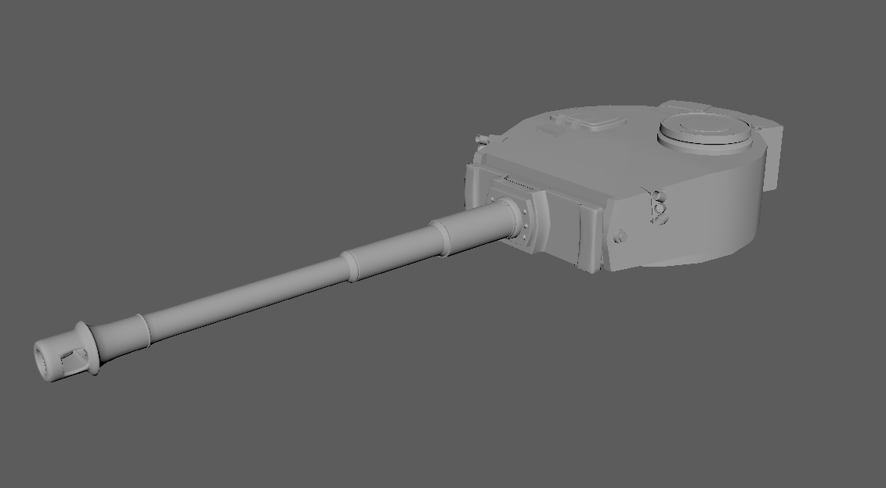

Kaktus Und Panzer
Kaktus Und Panzer is an animated short film created in Maya. The story takes place In the African desert during World War 2 where the Axis started the African Campaign against the Allies' colonies in Africa in 1940. The film is showcases the Epic battle between the American Sherman tank and the German Tiger tank.
Role
3D Modeler, Character Rigging, Animator, StoryBoard, QA
Software Used:
Maya, Mental Ray, Illustrator, Photoshop, After Effects
Members
Wade Liu, Tamiko Tadeo, Kenny Cheung, Gordon Huang
Process
The team started the project through a few brainstorming sessions where we found out that most of the members really like the concept of creating a tank battle animation. We wanted to feature the film with two of the most iconic tank of World War Two which are the Tiger and the Sherman. After the theme is set, as a group we started to create the storyboard for the animations and play out the schedules for the modeling, rigging, and doing the animations.
In this project, my main task was to create the model for the two tanks. To create these two tanks in Maya, I used the blueprints of the two tanks as a reference when I was modeling which allow me to be quite precise in the scaling of the two tanks. After the model is done I started working on rigging the tanks. For the tanks’ movement, the team wants a realistic track movement. After multiple meetings with the team, we decided to take the programming approach with the track movement and physics.
StoryBoard Sequence
Initial model of the turret for the tank
After making sure all the rigging is smooth, we moved on to creating the animation with the models. The animation process went fairly smoothly with all the scenes planned out beforehand, we were able to complete the animation ahead of the expected schedule. In the end, the project was very successful with the audience liking a lot of the shots within the scenes.
Reflection
I enjoyed working on this project. This project allows me to strengthen my modeling skills and further extend my understanding of the different modeling techniques in Maya. I was able to learn new skills in rendering and texturing. In the project, the team rarely encountered problems, and everything flows well due to the clear communication within the team and between the teaching staff.

Animated Scene Render
Animated Render